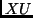
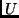
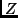
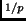
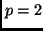
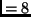
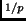
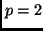
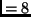

Next: Bug Reports
Up: Dimension Reduction Regression in
Previous: Weights
The function dr.direction takes two arguments, the object
name, and which directions are wanted (for, example, 1:3
returns the first three directions). It returns the matrix ,
scaled to have unit column length unless the argument norm is
false, where  gives the specified eigenvectors.
The function calls dr.x(i1) and dr.y(i1) return the model
matrix and the response, respectively.
dr.z(i1,center=T,rotate=T) returns the centered and rotated  matrix
from  . You can also use dr.z by explicity providing a
matrix in place of the first argument, and if necessary a
vector of weights as a second argument.
The routine used for slicing is called
dr.slices(y,h) to slice y into h slices. If y has
. You can also use dr.z by explicity providing a
matrix in place of the first argument, and if necessary a
vector of weights as a second argument.
The routine used for slicing is called
dr.slices(y,h) to slice y into h slices. If y has
 columns and h has elements, then slicing is done
recursively. The first column of y is sliced into
h[1] slices. Within each of these slices, the second
column of y is sliced into h[2] slices, giving
h[1]*h[2] slices. This process is then repeated for any
additional columns. If h is a scalar, then each dimension
is sliced into the smallest integer larger than h
slices. For example, if  and h, then each
dimension has 3 slices for a total of 9.
columns and h has elements, then slicing is done
recursively. The first column of y is sliced into
h[1] slices. Within each of these slices, the second
column of y is sliced into h[2] slices, giving
h[1]*h[2] slices. This process is then repeated for any
additional columns. If h is a scalar, then each dimension
is sliced into the smallest integer larger than h
slices. For example, if  and h, then each
dimension has 3 slices for a total of 9.
Next: Bug Reports
Up: Dimension Reduction Regression in
Previous: Weights
Sandy Weisberg
2002-01-10